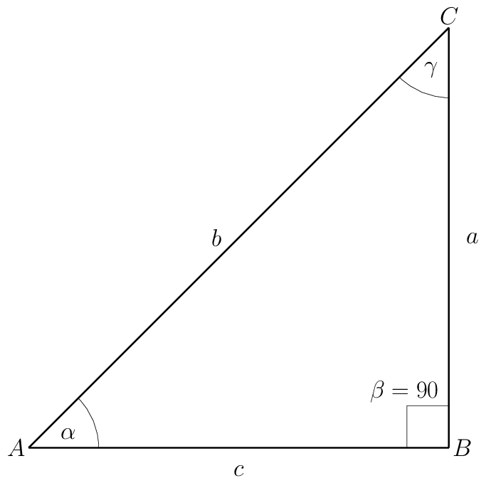
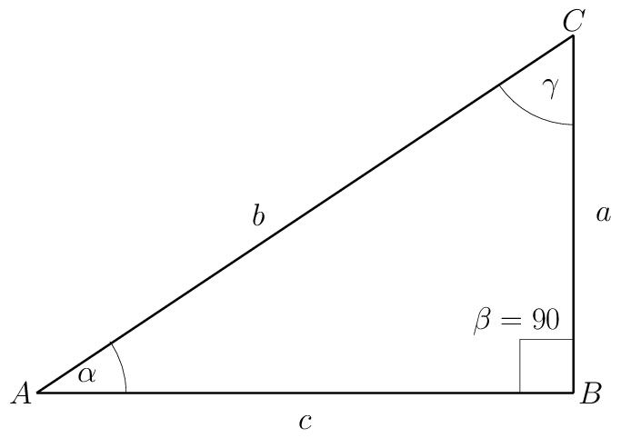
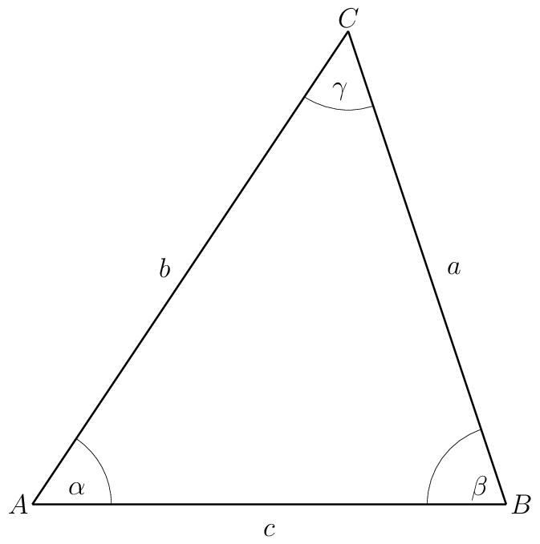

HP-15C Tips & Tricks
| Author: | Mitch Richling |
| Updated: | 2024-02-21 |
| Generated: | 2024-02-21 |
Copyright © 2024 Mitch Richling. All rights reserved.
Table of Contents
1. Introduction
This document contains computational recipes for the HP-15C. Most of these items fall into one of the following categories:
- Some tricky behavior of the 15C
- An efficient way to preform some computation on the 15C
- Illustrate a neat way to solve a problem – not necessarily 15C specific
2. Triangles
2.1. Right Triangle: Known Hypotenuse & angle
This item illustrates the different behavior of →R and →P when complex mode (flag 9 set) is enabled.

With \(b=5\) and \(\alpha=30\).
2.1.1. Complex Mode
If the calculator is in complex mode (Flag 9 set):
| g DEG | Put calculator in degree mode (if necessary) |
| 5 ENTER 3 0 f I f →R | Enter complex number \(5\angle30\) (length of \(b\) and \(\alpha\) angle) |
\(c\) is on the real stack at X, and \(a\) is on the complex stack at X.
2.1.2. Real Mode
If the calculator is not in complex mode (Flag 9 clear):
| g DEG | Put calculator in degree mode (if necessary) |
| 3 0 ENTER 5 f →R | Enter \(\alpha\) and \(b\) on the stack, and convert to rectangular |
\(c\) is on the stack at X, and \(a\) is on the stack at Y.
2.2. Right Triangle: Known Legs (the 2D HYPOT function)
Like the previous item, this one also illustrates the different behavior of →R and →P when complex mode (flag 9 set) is enabled. In addition, this item illustrates the most efficient way to compute the 2D \(\mathrm{HYPOT}\) function.
The 2D \(\mathrm{HYPOT}\) function is defined as \(\mathrm{HYPOT}(x,y)=\sqrt{x^2+y^2}\). The function is so named because its value is the length of the hypotenuse of a triangle with leg lengths of \(x\) & \(y\). A slight modification to the triangle solution technique below gives us a method to compute \(\mathrm{HYPOT}\) with the fewest keystrokes. In particular, when computing \(\mathrm{HYPOT}(x,y)\) we don't need to insure the calculator is in degree mode – i.e. to compute \(\mathrm{HYPOT}(x,y)\) we can skip the first step in each of the procedures below. For how to compute the generalized \(\mathrm{HYPOT}\) function, see HYPOT below.

With \(c=4\) and \(b=3\).
2.2.1. Complex Mode
If the calculator is in complex mode (Flag 9 set):
| g DEG | Put calculator in degree mode (if necessary) |
| 4 ENTER 3 f I | Enter complex number \(4+3i\) |
| g →P | Convert to polar form. |
\(b\) is the real stack at X, and \(\alpha\) is on the complex stack at X.
2.2.2. Real Mode
If the calculator is not in complex mode (Flag 9 clear):
| g DEG | Put calculator in degree mode (if necessary) |
| 3 ENTER 4 g →P | Enter \(b\) & \(c\) on the stack, and convert to polar |
\(b\) is the stack at X, and \(\alpha\) is on the stack at Y.
2.3. General Triangle: SAS (Side Angle Side)
The way the HP-15C works with complex numbers exposes the real & imaginary parts to the user for individual manipulation. For example the HP-15C has no Re,
Im, or conj functions because they are simply unnecessary. This design choice makes it simple to change the sign of the real part of a complex number on the
HP-15C with a single keystroke! Most calculators require several keystrokes to achieve the same task. For example, on the HP-42S we might use a sequence like
[COMPLEX] [X<>Y] [CHS] [X<>Y] [COMPLEX] to change the sign of the real part of a complex number.
In the sequence below we change the sign of the real part of a complex number with a single keystroke (step 4 below). We do this to transform the complex number's argument to the supplementary angle.

With \(b=5\), \(\alpha=30\), and \(c=4\).
| g DEG | Put calculator in degree mode (if necessary) |
| 5 ENTER 3 0 f I f →R | Enter complex number \(5\angle30\) (length of \(b\) and \(\alpha\) angle) |
| 4 - | Subtract \(4+0i\) (the length of \(c\)). Gives side \(a\) as a complex number |
| CHS | Changing the real part sign transforms the complex angle to the supplementary angle. |
| →P | Convert to polar form. |
\(a\) will be on the real stack at X, and \(\beta\) will be on the complex stack at X.
3. Lines
3.1. Equation of line given two points
The mathematical idea behind how this works is that linear regression with only two points produces the equation of the interpolating line.
This works on any calculator that can do linear regression, but the process is particularly efficient on the 15C. For example, the entire process on the
HP-15C requires only 7 keystrokes beyond data entry; however, on the fx-5800P (my favorite algebraic scientific calculator) it takes 18 keystrokes ([mode]
[4] [function] [5] [1] [2] [EXE] x1 [EXE] x2 [EXE] [UP] [UP] [RIGHT] y1 [EXE] y2 [EXE] [FUNCTION] [6] [2] [1]).
Find the equation of the line passing through \((2,3)\) and \((5,2)\) in slope-intercept form (i.e. \(y=mx+b\)).
| f CLR_Σ | Clear statistical registers (if necessary) |
| 3 ENTER 2 Σ+ | Enter first point (note y goes in first) |
| 2 ENTER 5 Σ+ | Enter second point |
| L.R. | Compute the line |
The value for \(m\) is in Y, and value for \(b\) is in X.
3.2. Interpolation & extrapolation (applied to Fahrenheit/Celsius Conversion)
This item is a continuation of the previous one, but this time we are interested in computed values on the line instead of the equation – i.e. we are interested in linear interpolation! Like in the previous topic, this concept works with any calculator capable of linear regression; however, the process is so cumbersome on many modern calculators that it's simply not worth the effort. On the Casio fx-5800P it takes 18 keystrokes (see: previous topic) to set up the interpolation, and 7 keystrokes ([FUNCTION] [7] [2] [DOWN] [DOWN] [DOWN] [ŷ]) to compute an interpolated value. Compare this to 7 keystrokes to set up the line, and 2 keystrokes to compute a value on the HP-15C. This is where the HP-15C shines.
Suppose we have several Fahrenheit values we need to convert to Celsius. We know the two values have a linear relationship, and we also remember the corresponding values in each system for the freezing and boiling points of water. In particular 0 Celsius corresponds to 32 degrees Fahrenheit, and 100 Celsius corresponds to 212 Fahrenheit. We wish to convert 68, 70, & 72 degrees Fahrenheit to Celsius.
| f CLR_Σ | Clear statistical registers (if necessary) |
| 0 ENTER 3 2 Σ+ | Enter first known point |
| 1 0 0 ENTER 2 1 2 Σ+ | Enter second known point |
| 6 8 g ŷ,r | The celsius value is on the stack at X |
| 7 0 g ŷ,r | The celsius value is on the stack at X |
| 7 2 g ŷ,r | The celsius value is on the stack at X |
3.3. Logarithmic Interpolation (Non-Linear Interpolation)
Most modern calculators can do several types of regression (at least logarithmic, exponential, power, and linear). The HP-15C can do only one, and that's linear regression. Still, with a little extra effort, we can preform these other types of regressions via logarithmic transformation of the input data. Additionally we can extend this technique to a whole host of non-linear regression techniques rarely supported by calculators. For me the most common non-linear regression I preform is logarithmic.
Suppose we have two points, \((x_1, y_1)\) and \((x_2, y_2)\), that we know are on a curve of the form \(y=m\cdot\ln(x)+b\). As a practical example, it might be the case that we have two voltage/current points on a diode V-I curve and we wish to know the coefficients in the Shockley diode equation. We can find this equation using the method used previously for finding the equation of a line given two points – we simply enter the natural logarithm of the \(x\) data.
For this example, let us suppose \((x_1, y_1)=(2,3)\) and \((x_2, y_2)=(5,2)\)
| f CLR_Σ | Clear statistical registers (if necessary) |
| 3 ENTER 2 LN Σ+ | Enter first point (note y goes in first) |
| 2 ENTER 5 LN Σ+ | Enter second point |
| L.R. | Compute the coefficients |
The value for \(m\) is in Y, and value for \(b\) is in X.
This method is quite general. We can replace \(\ln\) with any function, \(g(x)\), so long as \(g(x)\) is monotone on the interval \([x_1, x_2]\). For example, we could fit \(y=m\cdot\sin(x)+b\) to the points \((0,1)\) & \((1.5, 2)\) – because \(\sin\) is monotone on \([0, 1.4]\).
4. 2D vectors
4.1. Vector Sums
The obvious approach to summing a series of 2D vectors is to use complex number arithmetic. That approach works just fine, but we can use the HP-15C's statistical capabilities to do the same computation with fewer keystrokes when working with more than 2 vectors.
Sum the following four vectors: \((2,3), (5,2), (7,7), (3,5)\). In what follows we use the statistical registers in reverse because entry is less error prone.
| f CLR_Σ | Clear statistical registers (if necessary) |
| 2 ENTER 3 Σ+ | Enter first vector |
| 5 ENTER 2 Σ+ | Enter second vector |
| 7 ENTER 7 Σ+ | Enter third vector |
| 3 ENTER 5 Σ+ | Enter fourth vector |
| RCL 3 | Sum of the \(y\) components |
| RCL 5 | Sum of the \(x\) components |
The sum of the \(x\) components will be in X, and \(y\) sum will be in Y .
4.2. Angle between vectors
This item is more about pointing out that we can find the angle between two vectors in 2D using complex arithmetic instead of the traditional vector angle formula. This works on any calculator supporting both polar & rectangular complex arithmetic.
Find the angle between the vectors \((2,3)\) and \((3,2)\).
| g DEG | Put calculator in degree mode (if necessary) |
| 2 ENTER 3 f I | Enter complex number \(2+3i\) for the first vector |
| 3 ENTER 2 f I | Enter complex number \(3+2i\) for the first vector |
| ÷ →P | Divide and convert to polar form |
The angle is on the complex stack at X.
5. General HYPOT Function
The \(\mathrm{HYPOT}(x,y)\) function may be generalized to \(n\mathrm{-vectors}\) like so:
\[\mathrm{HYPOT}(\vec{x})=\sqrt{\sum_{i=1}^n x_i}\]
Note this is nothing more than the Euclidean Norm (2-norm) usually written \(\left\Vert\vec{x}\right\Vert_2\) or simply \(\left\Vert\vec{x}\right\Vert\).
The most efficient way to compute this function when \(n=2\) is provided in a previous topic.
When \(n=3\) the best sequence is
| \(x_1\) ENTER × \(x_2\) ENTER × + \(x_3\) ENTER × + √x |
When \(n>3\) the best sequence is
| f CLR_Σ ( \(x_i\) f Σ+ …) RCL 4 √x |
6. Meta Data
The primary URL for this page: https://richmit.github.io/voyager/hp15-tips.html
The org mode file for this page: https://github.com/richmit/voyager/blob/main/docs/hp15-tips.org
The HTML file for this page: https://github.com/richmit/voyager/blob/main/docs/hp15-tips.html
The github repository housing this content: https://github.com/richmit/voyager/